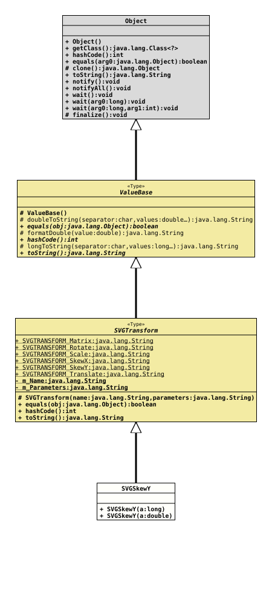

Class SVGTransform.SVGSkewY
java.lang.Object
org.tquadrat.foundation.svg.type.ValueBase
org.tquadrat.foundation.svg.type.SVGTransform
org.tquadrat.foundation.svg.type.SVGTransform.SVGSkewY
- Enclosing class:
SVGTransform
@ClassVersion(sourceVersion="$Id: SVGTransform.java 1163 2026-03-20 15:28:33Z tquadrat $")
@API(status=STABLE,
since="0.0.5")
public static final class SVGTransform.SVGSkewY
extends SVGTransform
{kind=link}
The SVG
This transformation definition specifies a skew transformation along the y-axis by
skewY transformation. This transformation definition specifies a skew transformation along the y-axis by
a degrees. The operation corresponds to the
matrix 1 0 0
( tan a 1 0 )
0 0 1- Author:
- Thomas Thrien (thomas.thrien@tquadrat.org)
- Version:
- $Id: SVGTransform.java 1163 2026-03-20 15:28:33Z tquadrat $
- Since:
- 0.0.5
- UML Diagram
-

UML Diagram for "org.tquadrat.foundation.svg.type.SVGTransform.SVGSkewY"
{kind=link}
-
Nested Class Summary
Nested classes/interfaces inherited from class SVGTransform
SVGTransform.SVGMatrix, SVGTransform.SVGRotate, SVGTransform.SVGScale, SVGTransform.SVGSkewX, SVGTransform.SVGSkewY, SVGTransform.SVGTranslate -
Field Summary
Fields inherited from class SVGTransform
SVGTRANSFORM_Matrix, SVGTRANSFORM_Rotate, SVGTRANSFORM_Scale, SVGTRANSFORM_SkewX, SVGTRANSFORM_SkewY, SVGTRANSFORM_Translate -
Constructor Summary
Constructors -
Method Summary
Methods inherited from class SVGTransform
equals, hashCode, toStringMethods inherited from class ValueBase
doubleToString, formatDouble, longToString
-
Constructor Details
-
SVGSkewY
-
SVGSkewY
-
{kind=link}
{kind=link}